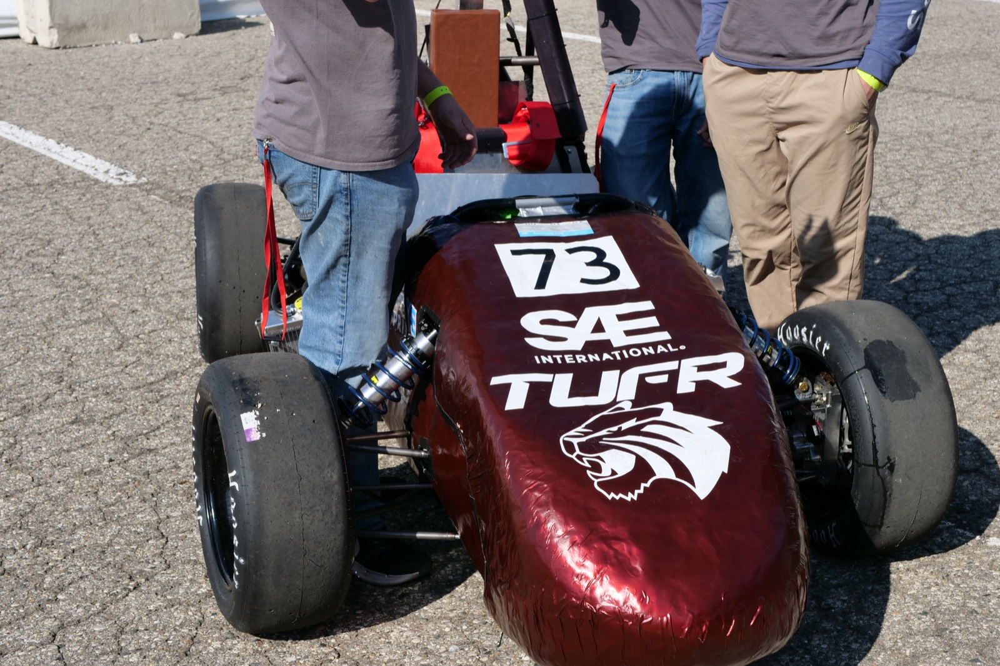

Our story
Trinity University Formula Racing is a student-run team that designs, builds, and races a formula-style car. It started, as it turns out, with a snowmobile engine and a lot of stubbornness.
The competition
Formula SAE is a student engineering competition run by SAE International. Every year, university teams design, build, and race a small open-wheel car, the kind a weekend autocross racer might drive. More than 100 teams compete at FSAE Michigan alone.
Teams are judged on far more than speed. At competition, the car is scored in static events (engineering design, cost analysis, and a business presentation) and dynamic events (acceleration, skidpad, autocross, and endurance). Before any of that, every car must pass technical inspection, including brake and noise tests. The best car on paper still has to survive the track.

The organization
TUFR is Trinity's Formula SAE chapter: a non-profit, student-run engineering organization open to every major and every year. Engineers design the chassis, powertrain, aerodynamics, and electronics. Business students run finances, sponsorships, and outreach, because a race team is also a small company.
No prior experience needed. Most of what our members know about building a race car, they learned by building one.
The process
Set goals from the FSAE rulebook, then model the chassis, suspension, powertrain, and electronics in CAD.
Run simulations and hand calculations on loads, weight, and lap time, and debate trade-offs before cutting metal.
Cut tube, weld the frame, machine parts, wire the harness, and assemble the car in our own shop.
Drive it, break it, learn why, fix it. Repeat until it is ready for inspection.
Pass technical inspection, then defend our design and budget in front of judges.
Team history
Three students with no race car, no shop, and no budget decided Trinity should have a Formula SAE team. The starting point was a snowmobile. They sourced a new engine, rebuilt the electrical system, and took the whole car apart and rebuilt it, learning what it takes to turn a machine built for snow into one built for pavement.
The team built and trained a larger roster while Car 1 took shape. A loose group of friends became a real organization, learning budgeting and building a sponsorship network, all driven by the original three with no outside guidance.
Car 1 did not pass technical inspection at competition, so Car 2 was built from the ground up. Just transporting the car and team was a major hurdle. A bigger sponsorship network and new advisors helped the team compete again.
The team is building Car 3, redesigning the elements that failed at last competition and leaning on experienced members who have been here since the start. The main goal this year is passing technical inspection.
Why we do it
We develop engineers and build a car worth being proud of.
We believe the best way to learn is to be responsible for a result. We build engineers who can design, manufacture, manage a budget, and work as a team, and we build a car worth being proud of.
Looking ahead
Complete the chassis, powertrain, and electronics, and get the car running.
Prepare the car and the team to pass inspection and compete at an FSAE event.
Recruit more members across every major and strengthen each sub-team.
Sponsors provide the parts, tools, and funding that turn a design into a race car.